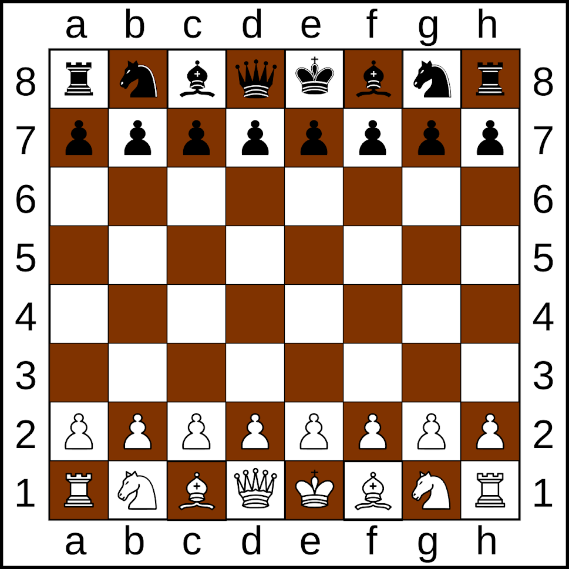

A stratégia, logika és ügyesség játéka
A sakk egy két emberes stratégiai játék, ami egy négyzet alakú 64 darabra felosztott különböző színü táblán játszódik.Mindkét játékos 16 darab bábúval kezdi a játékot: 1 király, 1 királynő, 2 bástya, 2 ló, 2 futó és 8 gyalog. A célja a játéknak hogy sakkmattot adj az ellenfeled királyának, ami azt jelenti, hogy a király támadás alatt van(sakk), de nincs több legális lépése arra, hogy a király megtudjon menekülni a támadás alól(sakk-matt).
Minden tipusú bábú másképp mozog. A király csak egy mezőt léphet bármelyik irányba, a királynő bármennyi mezőt tud lépni, bármilyen irányba, a bástya bármennyit léphet horizontálisan illetve vertikálisan, a futó szintén bármennyit léphet csak átlókban, a ló csak L-betű alakban léphet, a gyalogok a kezdő pozícióból léphetnek előre 2 mezőt, de alapvetően 1 mezőt léphetnek előre, illetve ha egy gyalog átjut az ellenfél térfelére az utolsó sorba, akkor kilehet cserélni bármilyen más bábúra. Vannak speciális lépések mint példáúl: en passant, sáncolás.
Minden négyzetnek megvan a saját neve, horizontálisan betűkkel ellátva 'a'-tól 'h'-ig, vertikálisan pedig számokkal 1-től 8-ig. A számozás illetve a betűzés mindig a 'fehér oldal' bal sarkából indul növekvő sorrendben.
A sakk sokféle módon játszható: online, klubokban, versenyeken, vagy akár barátokkal. Számos online sakkplatform létezik, ahol másokkal játszhatsz a világ minden tájáról. A helyi sakkklubok remek lehetőséget kínálnak más sakkozókkal való találkozásra és játékod javítására leckék és versenyjáték segítségével. Nagy nemzetközi sakkversenyeket tartanak évente, amelyek a világ legjobb játékosait mutatják be.
Copyright 2023 - Minden jog fenttartva!